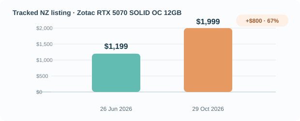
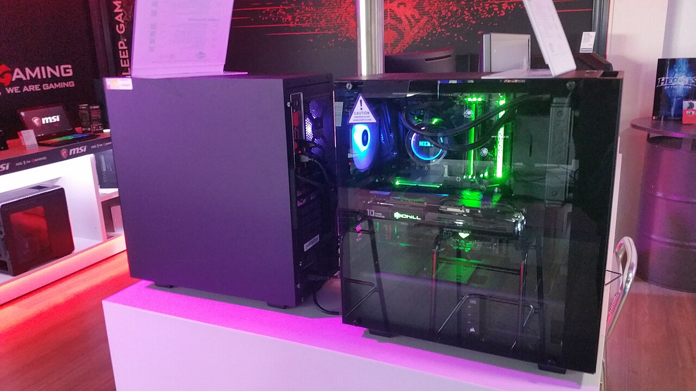

Page 3 · What it means for builders
The impact on a PC build
Even if you are building a computer for gaming, school or creative work—not AI—the global demand for chips can still affect the price of the parts you want.
A New Zealand graphics-card example

PriceMe's tracking history for one Zotac GeForce RTX 5070 SOLID OC 12GB listing shows the lowest listed price at Computer Lounge moving from NZ$1,199 on 26 June 2026 to NZ$1,999 on 29 October 2026. That is an increase of NZ$800, or about 67%. [2]

PriceMe historical listing data for one Zotac RTX 5070 model. This is an example, not an average for all graphics cards.
For a wider comparison, TechSpot tracked gaming GPU prices across ten countries and reported an average rise of about 35% over the three months to October 2026. This is an international comparison, not a New Zealand-only figure, and it does not mean AI caused every part of the increase. [4]
What could change in your build?
| Part | Why it matters | Possible effect on a build |
|---|---|---|
| RAM | DRAM supply is under pressure as server demand grows. | A memory kit may take more of the budget. |
| SSD | NAND Flash prices are forecast to rise. | Large storage upgrades may cost more. |
| Graphics card | GPU prices and graphics-memory costs can be affected by supply constraints. | The graphics card may become the hardest part to fit into a budget. |
How can builders respond?
Compare the whole build
Check several stores and compare the total cost, rather than focusing on one component or one advertised discount.
Be flexible with parts
Look at more than one graphics card or storage option, and check real benchmarks and compatibility before choosing.
Reuse what still works
A compatible case, power supply or storage drive may be worth keeping, provided it is suitable for the new build.
Check prices over time
Use price histories and make decisions based on your needs and budget, not pressure from headlines.

PB Tech reported in February 2026 that New Zealand buyers were already seeing significant price increases across products containing memory, chips and hard drives, linked to worldwide shortages. [3]
Overall effect
The AI boom can make a normal gaming or school PC more expensive even when the builder has no plans to use AI. It shows how investment in large data centres can affect the everyday technology market.